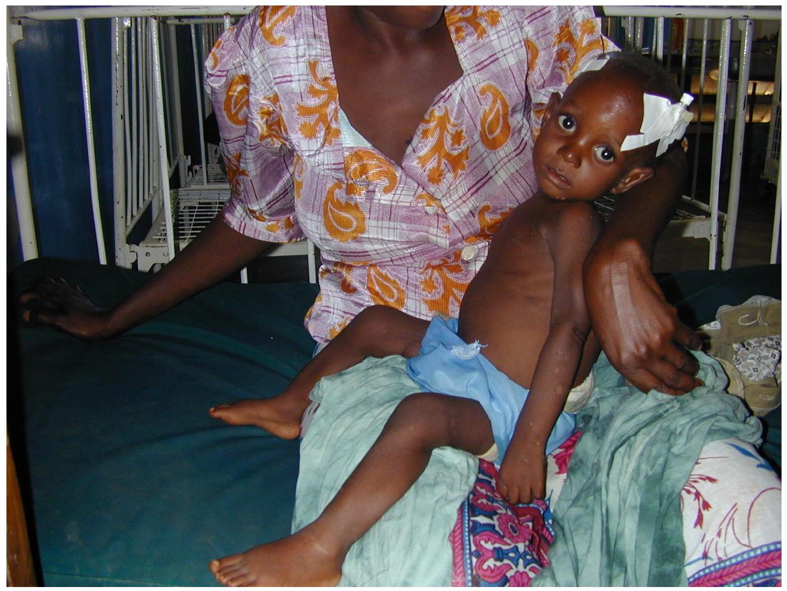

Severe Malnutrition 1 Recognition And Early Treatment
ETAT+
Emergency Triage Assessement and
Treatment plus admission


RECOGNITION OF SEVERE ACUTE MALNUTRITION
Definition of severe acute malnutrition:-Severe acute malnutrition (SAM). is the presence of severe wasting (weight-for-height/length <3SD or mid upper arm circumference <11.5 cm ) or oedema of both feet (Kwashiorkor with or without severe wasting.
The main features of SAM are:
- Weight-for-height/length <-3SD, or
- Mid upper arm circumference (MUAC) <11.5 cm or
- The presence of pitting oedema of both feet
Classification of acute malnutrition
| MUAC IN CM | WHZ | |
|---|---|---|
| NONE (Green colour) | Greater than 13.5 | Greater than -1 |
| AT RISK (Green colour) | 12.5 to 13.4 | -2 to -1 |
| MODERATE (Yellow colour) | 11.5 to 12.4 | -3 to less than -2 |
| SEVERE (Red colour) | 11.4 and below | Less than -3 |
| Or Oedema of both feet | ||
Advantages of MUAC over WHZscore
- More (in screening) acceptable to children compared to height or weight
- Can be done by one person
- No reference table required, single cut off applied independent of age, sex, height
- Colour-coded tapes
- Not affected by condition that affect weight e. g oedema, dehydration
WHO Weight-for-Height/Length Z-Score Charts
Key Points to note
- MUAC is preferred for age 6-59 months.
- Oedema is used to differentiate two classes of severe acute malnutrition (marasmus and kwashiorkor.)
- MUAC is a single linear measurement that does not require arithmetic, table lookup or plotting data on growth charts.
- The colour coded MUAC tapes are simple to use and allow instant classification of nutritional status.
- Neither MUAC nor WHZ is ideal for predicting mortality; however MUAC appears to show consistently better predictive power.
- Thus MUAC is the best anthropometric predictor of mortality currently available.
- Weight for age may not accurately identify wasting and therefore, the preference for use of MUAC (or weight for height or length Z scores)
- Visible severe wasting is very insensitive for identifying severe malnutrition. It identifies only severe cases of SAM. It is better to use MUAC.
SIGNS TO LOOK FOR WHEN EXAMINING A CHILD FOR SAM
- Signs of some or severe circulation impairment, These include cold hands, slow capillary refill, weak and rapid pulse
- Severe palmer pallor
- Bilateral pitting oedema,
- Eyes signs of Vitamin A deficiency
- Dry conjunctiva or corneal, Bitots spots
- Cornea ulceration
- Keratomalacia
- Vitamin A deficiency may cause photophobia and the children tend to keep their eyes closed.
What other problems do these children commonly have?
KEY NUTRITIONAL PROBLEMS IN KENYA
- Growth Faltering
- Micronutrient deficiencies (Iodine, Iron, Vitamin A)
- Sub-optimal Breastfeeding
Physiology of SAM
Reductive adaptation
Definition
It is a physiological response through which the body conserves energy. This is achieved through;
- Reducing physical activity and growth
- Reducing basal metabolism by:
- Slowing protein turnover
- Reducing functional reserve of organs
- *slowing and reducing na+/K+ pumps
- Reducing inflammatory and immune responses
N/B The basic physiology of severe acute malnutrition is protein and energy deficiency.
This is the core problem but it is often accompanied by other deficiencies such as those of electrolytes, minerals, micronutrients and vitamins.
As depicted in the below pie chart
Apart from the various nutrient deficiencies, the child also has increased risk of developing infections due to an impaired immune response.
These children lack subcutaneous fat and therefore they are prone to hypothermia.
Changes in liver function, the endocrine system and hypothermia make them prone to hypoglycaemia.
Many of these children also have a poor cardiac function that may lead to congestive cardiac failure especially if given intravenous fluid or blood transfusion without caution.
At the intestinal level, there is poor motility of the intestine and also poor absorption.
They also tend to have high sodium and low potassium levels in the body
With all these derangements, a systematic approach is required to make sure that nothing is missed in the identification of problems and in managing them. This is the rationale for the 10 step approach
10-Step Approach to the management of the child with severe acute malnutrition
W.H.O recommends the 10 step approach of management of a child with severe acute
Good! Having looked at the graph now let us try to substantiate each step for better understanding.
Hey remember this always! That:-
The first seven steps are called the rescue phase. The interventions in this phase are initiated at the point of admission.
The last 3 steps are the recovery phase, which occur after the child is stable.
Throughout this management there should be constant monitoring.
Rescue phase
Step 1- Hypoglycaemia
All severely malnourished children are at risk of hypoglycaemia.
Blood sugar should be measured immediately but if this is not possible it should be assumed that all children with severe malnutrition have hypoglycaemia.
A blood sugar less than $3 \mathrm{mmol} / \mathrm{l}$ is hypoglycaemia in a child with SAM.
They should be given a feed that is F-75 or 10% glucose or sucrose immediately upon admission. Frequent feeding thereafter is important.
Step 2 -Hypothermia
Hypothermia is very common in malnourished children and often indicates coexisting hypoglycaemia or serious infection.
If the axillary temperature is <35°C or does not register on a normal thermometer, assume hypothermia.
Where a low-reading thermometer is available, take the rectal temperature. A reading <35.5°C confirms hypothermia.
Make sure the child is clothed (including the head), cover with a warmed blanket and place a heater (not pointing directly at the child) or lamp nearby.
Alternatively put the child on the mother's bare chest or abdomen (skin-toskin) and cover them with a warmed blanket and/or warm clothing
Ensure that the child is covered at all times, especially at night.
Keep the head covered, preferably with a warm bonnet to reduce heat loss.
Monitor the temperature two hourly.
Feed the child 2-hourly, starting immediately after the diagnosis is made.
Always give feeds throughout the night and day.
Place the bed in a warm, draught-free part of the ward and keep the child covered.
Change wet nappies, clothes and bedding to keep the child and the bed dry.
Avoid exposing the child to cold (e.g. after bathing, or during medical examinations).
Let the child sleep with the mother for warmth in the night.
Step 3-Dehydration
It is difficult to estimate dehydration status accurately in the severely malnourished child using clinical signs alone.
Assume that all children with watery diarrhoea may have some dehydration.
Severely impaired circulation (Shock) is diagnosed in these children using the same core signs as in those without malnutrition:
- Reduced level of consciousness,
- Absent or weak (low volume) peripheral.
Severely impaired circulation (Shock) is treated with special fluid plans using Ringer's lactate solution (Hartmann's solution).
Administer the fluid as a slow bolus at a rate of 20mls/kg given over two hours.
At the end of the two hour, continue with oral (or NG) fluids.
Repeat boluses are not recommended even if the child still has features of severely impaired circulation.
Give ReSoMal (rehydration solution for malnutrition) at $10 \mathrm{mls} / \mathrm{kg} /$ hour per oral or using NG for the first two hours.
Then give fluids at $5-10 \mathrm{mls} / \mathrm{kg}$.hr for the next $4-10$ hours; alternate the ReSoMal with same volume of F75.
The volume to give will depend on how much the child wants, volume of stools and whether child is vomiting. The Basic Paediatric Protocols provides guidance with assumption that you will give ReSoMal at $10 \mathrm{ml} / \mathrm{kg} / \mathrm{hr}$.
After the rehydration therapy, give F75 at the appropriate volume every 3hours.
If the child has severe palmer pallor transfuse $10 \mathrm{mls} / \mathrm{kg}$ whole blood over 3 hours as soon as it is available and then continue with appropriate volume of F75 every 3 hours.
After the IV fluid bolus for management of severely impaired circulation, if it not possible to give NG fluids (child in un-arousable coma or acute abdomen) give maintenance fluids - Half Strength Darrow's (HSD) in $5 \%$ Dextrose at $100 \mathrm{mls} / \mathrm{kg} /$ day ( $4 \mathrm{mls} / \mathrm{kg} / \mathrm{hr}$ ) until it is possible to use NG route.
Continue breast feeding throughout. Check the respiratory rate, pulse rate, urine frequency, frequency of stools and vomit.
If you find signs of over hydration (increasing respiratory rate by $5 / \mathrm{min}$ and pulse rate by $15 / \mathrm{min}$ ), stop ReSoMal immediately and reassess after 1 hour.
Step 4-Electrolytes
Pre-packaged formulations F75, F100 and RUTF used in SAM contain adequate electrolytes to meet the needs of these children.
Step 5 Infection
Children with SAM often do not develop fever and most times the white cell count is not elevated even when there is confirmed infection.
Assume that all children with SAM have an infection on their arrival in hospital and treat with appropriate antibiotics straightaway.
All sick children with severe acute malnutrition in hospital should be started on:
- Crystalline Penicillin (or Ampicillin) for two days then high dose oral amoxicillin for 5 days.
- AND IV/IM Gentamicin $7.5 \mathrm{mg} / \mathrm{kg}$ for 7 days.
In addition they also receive:
- Nystatin / Clotrimazole for oral thrush,
- Mebendazole after 7 days treatment. (deworming),
- Tetracycline eye ointment (+ atropine drops) for pus / ulceration in the eye.
Step 6 Micronutrient deficiencies
To correct micronutrient deficiencies give:
- High dose Vitamin A to children with eye signs: 200,000 iu on admission, on Day 2 and on Day 14 (100,000 iu if aged < 12 months).
- The pre-packaged F75/F100 had adequate micronutrients, if given at the right dosage, to correct micronutrient deficiencies.
- These micronutrients include Vitamin A and other vitamins, folic acid, zinc and copper. However, should be prescribed be given if prepackaged F75/100 are not available.
- Start iron ONLY when the child is gaining weight.
Step 7 Initiate Feeding
Essential features of initial feeding are:
- Frequent small feeds of low osmolality and low lactose
- Oral or nasogastric feeds (never parenteral preparations) should be used.
- Vomiting is NOT a contraindication to feeding. If the child is breastfed, continue with this, but make ensure the prescribed amounts of feeds are given.
- Feeds are the 'drug' to cure malnutrition; they are a priority (after correction of dehydration if required).
- The preferred starter formula is called F-75; it provides 75 Kcal and 0.9 grams of protein $/ 100 \mathrm{ml}$. This is a pre-packed formula.
- If it is not available, you can make F75 from water, skimmed milk, oil and sugar. [Refer to the WHO Pocket Book for Hospital Care of Children for preparation formula]
F-75 is used as follows:
- $130 \mathrm{ml} / \mathrm{kg} /$ day in a child without oedema (or has mild/moderate)
- $100 \mathrm{ml} / \mathrm{kg} /$ day in a child with severe oedema.
This starter feed is maintained at this volume until when the child's appetite improves.
At this point the child is ready receive F100 or ready to use therapeutic feed (RUFT).
The starter feeds should be given 3 hourly ( 8 feeds per day). This means at night too!
The very sick children may be feed every 2 hours, if staffing allows, but graduate to 3 hourly feeds as the child improves.
During this period that lasts 2-7 days, you should monitor and record the following
- Amounts of feed offered and left over
- Vomiting
- Stool frequency and consistency
- Daily body weight
Recovery Phase
Step 8-Catch up Growth
Appetite and activity level, not weight change, denotes recovery in the first week.
F-75 feeding is usually not associated with weight gain.
Weight loss may even occur in children whose oedema is improving so Do not panic!
Ensure at least $100 \mathrm{mls} / \mathrm{kg} /$ day of F75 has been given.
Changing to F-100 from F-75: Change to F-100 at same volume as F-75 and maintain that volume for two days while monitoring the child.
F-100 has more calories and protein per volume compared with F-75
As illustrated in the table below
| Contents per 100 ml | F-75 | F-100 |
|---|---|---|
| Energy (Kcal) | 75 | 100 |
| Protein(grams) | 0.9 | 2.9 |
| Potassium (mmol) | 4.0 | 6.3 |
| Sodium (mmol) | 0.6 | 1.9 |
| Magnesium (mmol) | 0.43 | 0.73 |
By giving the volume of F-100 as F-75 given in the initial period, the child receives higher energy while the protein and sodium content is more than tripled.
It is therefore important to have gradual translation to F-100.
On the third day, after changing to $\mathrm{F}-100$, increase each successful feed by 10 ml until some feed remains uneaten.
At this point the child should be able to feed using cup (with or without a spoon).
A sachet of 92 gm of RUTF provides 500 kcal . The amount of RUTF should provide $200 \mathrm{kcal} / \mathrm{kg} /$ day .
Unlike F100, RUTF contains iron in addition to other minerals and vitamins and thus it is not necessary to give iron during the recovery phase.
Encourage the child to eat as often as possible.
A child on RUTF should drink plenty of clean water, from a cup, as the child eats the RUTF.
If child still breastfeeding, the child should breastfeed before every RUTF feed.
When to change from F75?
Appetite test
If the child is clearly very hungry then use RTUF immediately - does this child need to be in hospital?
Return of appetite after starting on F75:
- Usually between 2-7 days
- Transition to F100 or RTUF if available
Oedema:
- You do not have to wait for resolution of oedema before changing if the child has a good appetite.
Feed with cup / cup and spoon
Step 9-Sensory stimulation plus rehabilitation and monitoring
At this point solid food can be introduced slowly, increasing to 5 meals a day.
Make sure the caregiver is aware what kinds of foods the child should be taking.
Pure maize porridge is inadequate.
Let the child feed in between the main meals. Continue breast feeding throughout.
One week after admission, if the child is feeding well iron and mebendazole can be introduced.
The child should by now be much more lively and interactive (normal!). This should be encouraged ideally by providing toys and an environment in which the child can play.
As the child is showing signs of recovery it is also very important to educate the mother about nutritional care of children and begin the process of preparation for discharge.
The process of monitoring is crucial during the recovery phase. This includes clinical symptoms and weight.
Please remember that feed intake must be monitored throughout.
If there is concern for heart failure due to overfeeding (increased pulse rate and respiratory rate),
Then you should reduce the feed amount / volumes to $100 \mathrm{ml} / \mathrm{kg}$ for 24 hours after which it can be increased gradually to $115 \mathrm{ml} / \mathrm{kg}$ after 24 hours and to $130 \mathrm{ml} / \mathrm{kg}$ after 48 hours.
Progress at this stage is measured by weight gain. Calculate and record the weight gain every 3 days as $\mathrm{g} / \mathrm{kg}$ per day.
Step 10. When to discharge
You should be comfortable to discharge, if the patient has:
- Completed antibiotics
- Good appetite and gaining weight
- Lost any oedema
- Appropriate support in the community or home
You should discharge on RUTF and ensure the Mother / carer:
- Is Available
- Understands child's needs
- Is able to supply needs